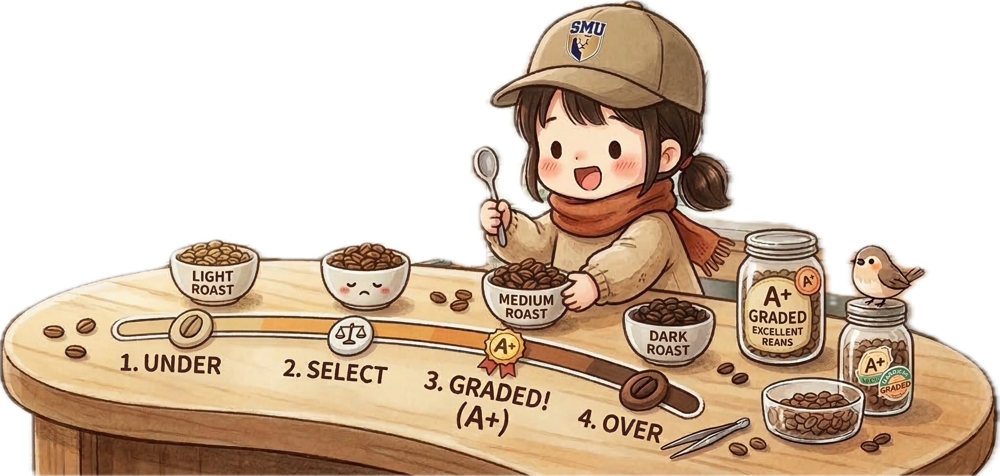

Bean Counting 2.0
Shifting Loyal Beans from At-Risk Grinds
Decoding customer behavior through Visual Analytics.
Transforming churn data into brewing success.
The Art of Data Brewing: From Seed to Sip
In the world of specialty coffee, moving from a raw seed to a perfect cup requires precision, grading, and constant monitoring. Similarly, our project treats raw banking data as “green beans,” applying visual analytics and machine learning to refine them into actionable business insights.
Harvesting Insight
Analysing Spending Behaviours
Just as harvesting ripe cherries is the foundation of quality, understanding transaction frequency and volume serves as our “origin” data.

Grading the Roast
Comparing Occupations
Green beans must be meticulously graded. We treat “Occupation” as a critical grading metric to identify “premium segments.”
The Final Cupping
Churn Probability Prediction
Predicting churn is like cupping for defects. Using predictive modeling, we act as a quality control layer to ensure relationships remain bold.
RSHINY APP
Understand the spending nature of customers.
🖼️ Project Poster

Prototypes
Explore our data refinery process, from raw sorting to the final predictive brew.